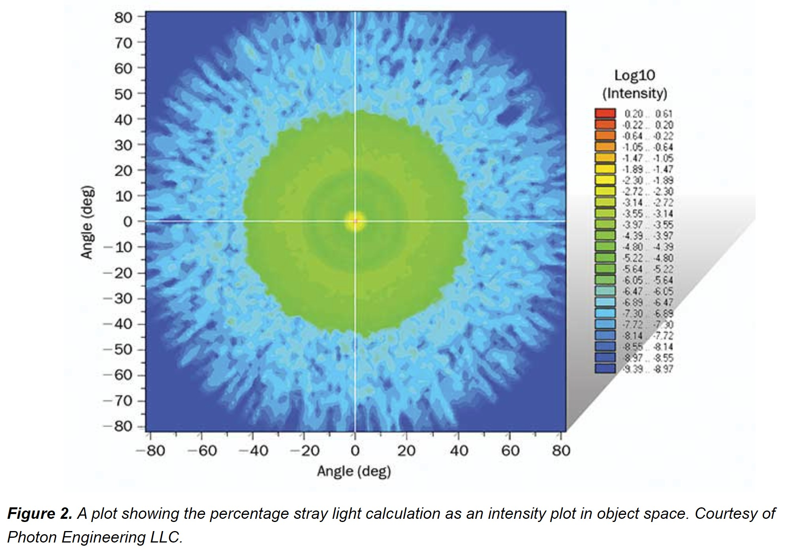

Ref : https://www.photonics.com/Articles/Optical_System_Optimization_Analyzing_the/a61737
https://lavinia.as.arizona.edu/~minimaestro/MAESTRO/Construction/References/bropn1157_straylight.pdf
Point source transmittance (PST) is the oldest stray light metric dating back to the 1970s and is conceptually very simple: Following from linear system theory, PST is simply the ratio of some measure of energy on the detector to the energy incident into the system, as a function of angle of incidence.

The PST is also known as the normalized detectorirradiance (NDI) and the point source normalized irradiance transmission (PSNIT).
The PST is basically a signal to noise ratio of the entrance pupil irradiance of a point source to the scattered light detector irradiance as a function of field angle. It is also a function of position on the detector, which can be analyzed with the SPOTS POSITION command, which computes irradiance.The PST is a common measure of scattered light performance in classical satellite imaging optical systems.
PSNIT (Point Source Normal Incidence Transmittance)